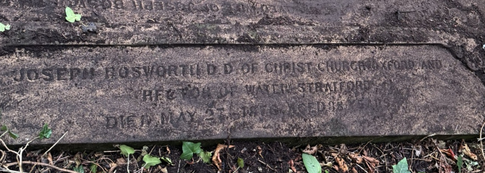
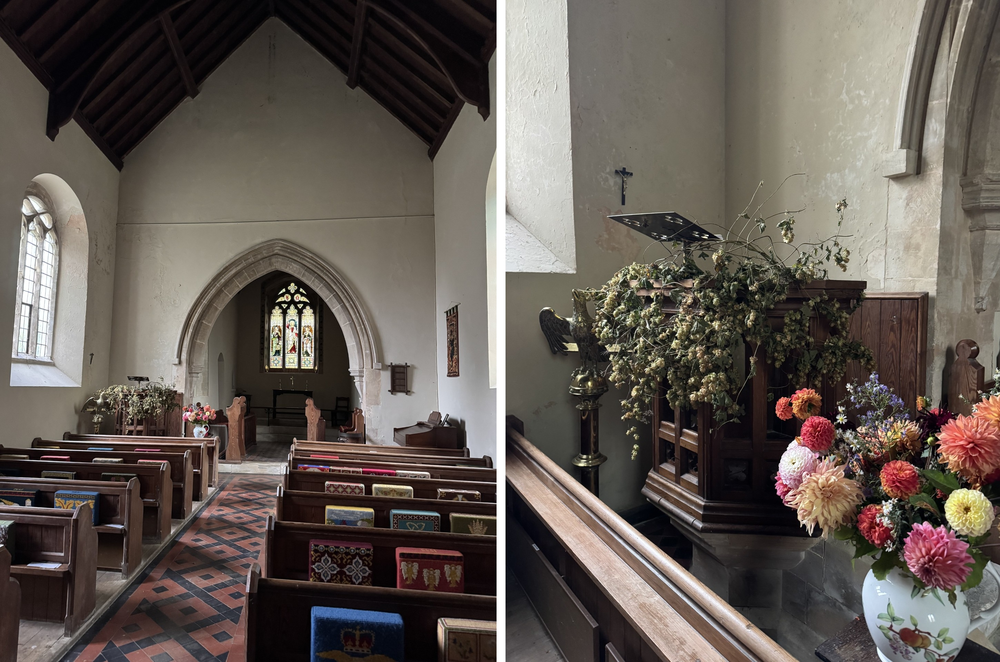
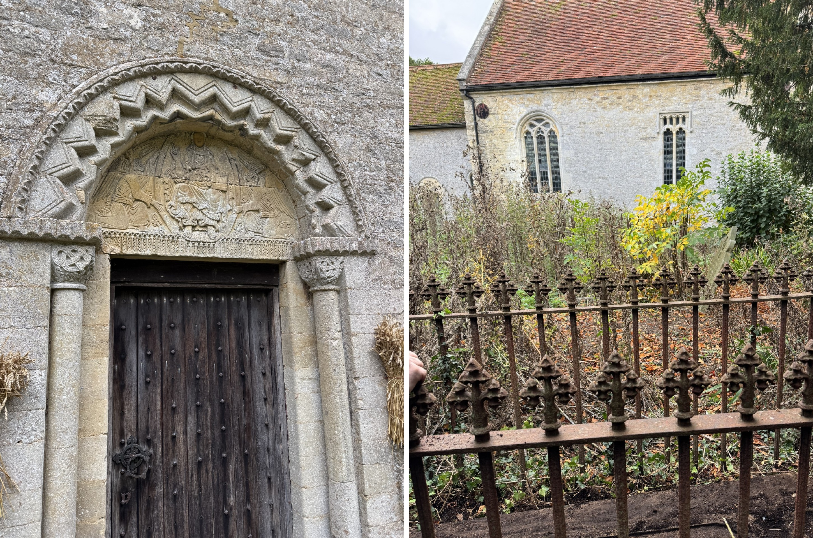
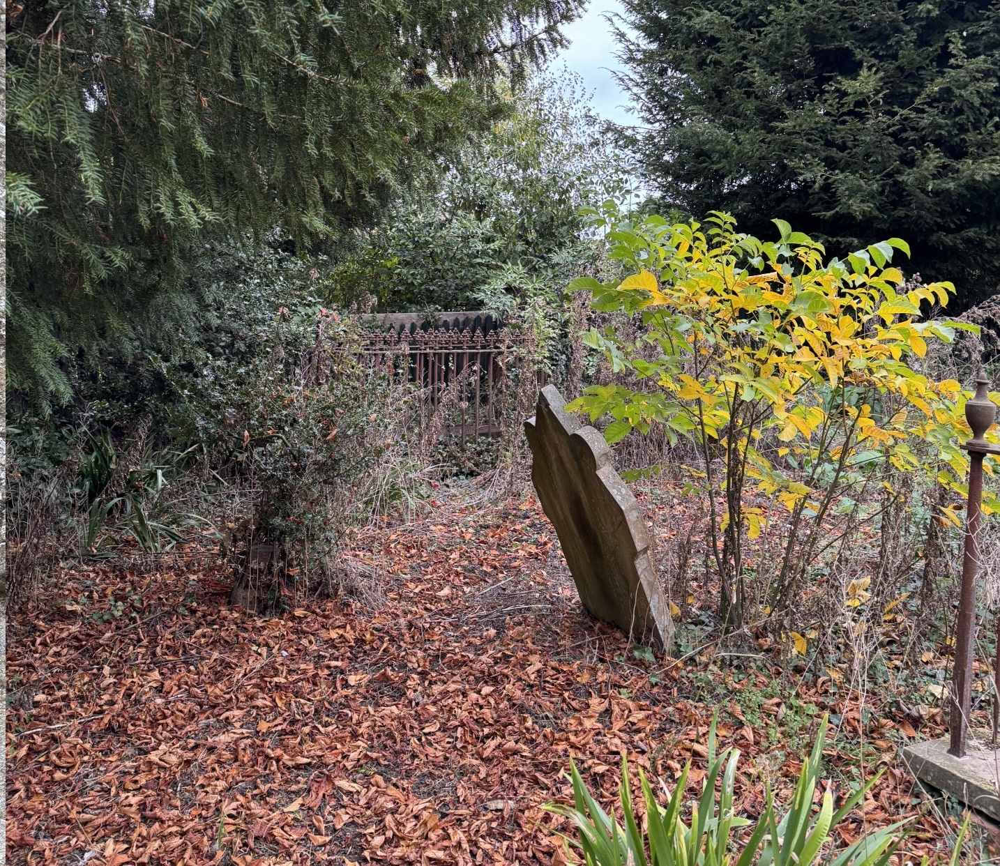
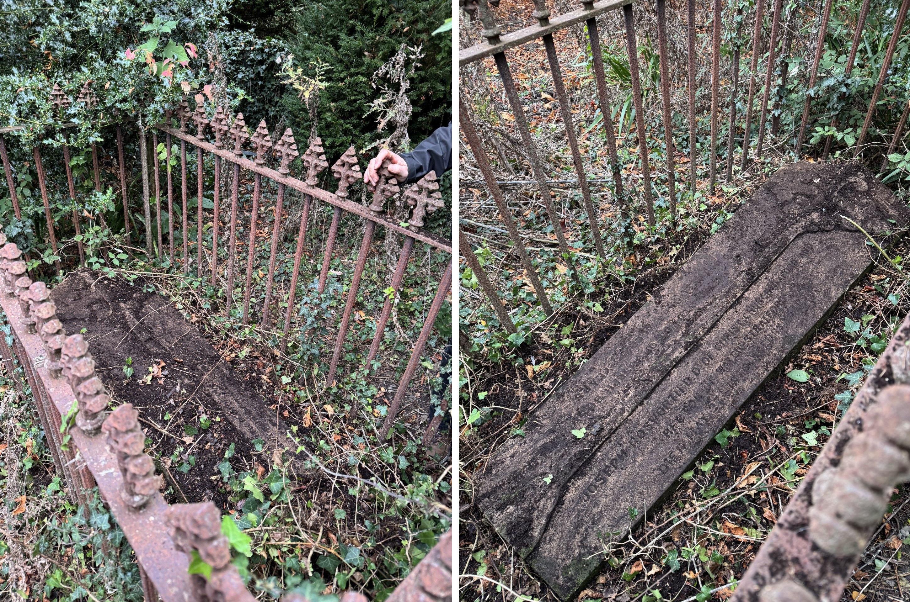
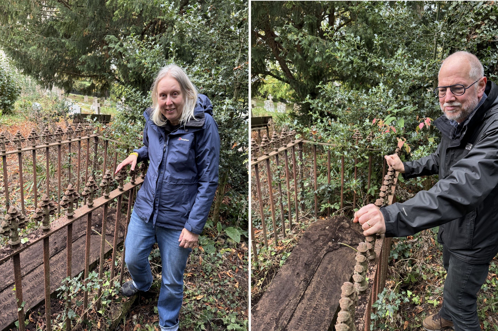

By: Christine Rauer; Date: 12 November 2026.
In the autumn of 2026, two members of our international advisory board, Christine Rauer and Kees Dekker, journeyed to Water Stratford, Buckinghamshire. Here, they uncovered (quite literally) the grave of one of the most important Old English philologists of the long nineteenth century: rev. Joseph Bosworth (1788–1876). In this short blog post, Christine Rauer reports their experiences, along with a number of photographs.

Bosworth was appointed Rector of St Giles in Water Stratford in 1858, when he was 70 years old, and in the same year as being appointed Rawlinsonian Professor of Anglo-Saxon at Oxford. Water Stratford is a small village some 20 miles north of Oxford; the post came with a Rectory for him to live in, but Bosworth also kept a house and and office in Oxford. He is buried in the churchyard of St Giles, together with his second wife, Anne. Having read about Water Stratford in Dabney Bankert's biography, Philology in Turbulent Times: Joseph Bosworth, His Dictionary and the Recovery of Old English (2023), Kees and I wanted to visit his grave. The two photos above show the interior of the small church St Giles when we got there, with the pulpit from which Bosworth must have preached.

The church is an old one, with a Norman doorway, but was restructured in the nineteenth century. The churchyard is very badly overgrown, and we had trouble finding the grave.

We had read that the grave was on the northern part of the churchyard, and in the end we thought that it might be the overgrown one with iron railings around it, in the background of the photo. Apparently Bosworth had the grave (initially of his wife) positioned in such a way that it could be seen from the Rectory. He was then later, in June 1876, buried there himself.

It took us some time gently to remove the thick layer of ivy and soil that was on the tombstone. The inscription is beautifully made and was still very legible underneath it. It was sad to see the entire churchyard so neglected and overgrown.

The visit made a great impression on us. We had got to see more of the life of one of the great nineteenth-century Old English scholars, and learned more about the world he lived and worked in. But it also became clear how vulnerable the material remains of that world really are, and how ephemeral the things turned out to be that must have meant something to Joseph Bosworth. It makes his scholarly work even more important, as that survives well taken care of, in modern libraries and online.
In May 2026, the EMERGENCE project co-organized a memorial event on the occasion of the 150th anniversary of Bosworth’s death (see here). During the event, attended by 100+ scholars online, a variety of speakers (Christine and Kees included) reflected on the impact of Bosworth and his A Dictionary of the Anglo-Saxon Language, which today forms the basis for the most widely used online dictionary of Old English.
This blog post is part of a project that has received funding from the European Research Council (ERC) under the European Union’s Horizon Europe research and innovation program (EMERGENCE, Grant agreement No.101115867, https://doi.org/10.3030/101115867 ). Funded by the European Union. Views and opinions expressed are however those of the author(s) only and do not necessarily reflect those of the European Union or the European Research Council Executive Agency. Neither the European Union nor the granting authority can be held responsible for them.